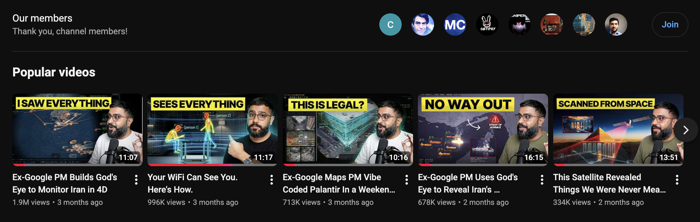

Facebook Reel｜God's Eye View：把公開即時資料疊到 3D 地球的開源空間情報介面

一句話摘要
這不是「取得機密情報」的工具，而是把原本分散的公開訊號做成可探索的空間介面；適合視覺化學習、公開資料研究與展示，不適合把即時資料、鏡頭畫面或模型資料的可用性誤解成無限制商用授權。
來源與查核
Facebook Reel 的公開 Open Graph 文字聲稱：3D 地球會疊加即時飛機、衛星、近 24 小時地震、NASA 火點與公共攝影機，並稱其為三週破三萬星、MIT 授權、可不用付費 key 運行的 GitHub 專案。Facebook 未向未登入瀏覽器提供完整貼文正文與留言中的安裝指引，因此以作者 Bilawal Sidhu 的官方 GitHub README、LICENSE 與其網站補查。
專案即為 God's Eye View。GitHub API 在歸檔時顯示約 38.7k stars；此數字會持續變動，不應當作固定承諾。作者網站自述曾在 Google 繪製／處理地圖相關工作，與 Reel「前 Google Maps」的背景描述大致一致，但本文不將其擴寫為未經官方履歷逐項確認的職稱。
可以做什麼
官方 README 說明它以逼真的 3D 地球呈現公開空間資料，包括：
- 即時或定期更新的飛航訊號、船舶 beacon、衛星軌道元素與地震資料。
- 環境與地理圖層，例如 NASA FIRMS 火點、交通與部分公共攝影機。
- 點選追蹤、座艙視角、HUD、視覺濾鏡、路線／註記與可分享的視角網址。
- 選用的語音控制與 AI HUD 摘要；這部分需要 OpenAI key。
官方也提醒：交通沿真實道路的呈現使用彙總位置資料模擬；CCTV 攝影機姿態與火箭軌跡為粗略估計。畫面具有強烈的「情報中心」風格，不等於所有圖層都是同一精度、同一更新率或適合作業判斷。
安裝與成本：免 key 可起步，不等於全功能免費
README 提供兩種官方路徑：Pinokio 一鍵安裝，或以 Node.js 24.14+／26.x 執行 git clone、npm ci、npm run doctor、npm run dev。基本路徑可使用 Esri 衛星影像與無 key 地形，航班、軍用交通、衛星、地震、公共攝影機、電台與發射任務等多個圖層可在不輸入 key 的狀態下使用。
但進階功能不是完全零成本：Cesium ion 的高擬真地形／3D 有個人與非商業資格及額度條件；Google Maps 的直接路徑與地點搜尋是計量服務；語音與 AI 摘要需 OpenAI key。應先讀各供應商目前的條款、用量限制與帳務規則。
授權與資料合規：最重要的校正
專案 LICENSE 的程式碼段落是 MIT License，但 LICENSE 也明確寫出 MIT 不涵蓋第三方資料、執行期取得的資料或 3D 模型。例如部分海底電纜資料為 CC BY-NC-SA、部分事件素材為 CC BY-NC，Google Maps、OpenSky 等即時來源另有自己的條款與憑證要求。換言之，fork／修改程式碼可依 MIT 處理，不表示可以把所有內建或即時圖層原封不動用於商業產品。
使用建議
- 先以無 key 的離線／基本路徑體驗，確認瀏覽器與 GPU 負載是否可接受。
- 將它視為公開資訊探索與視覺化介面，不以單一圖層作為安全、交通、災害或執法決策依據。
- 若接入 OpenAI、Google 或 Cesium，為 key 設用量、網域與權限限制；不要把 key 寫入 repo 或分享截圖。
- 重新發布、商用或錄製展示前，逐項檢查資料來源、模型與影像的授權、署名與地域／隱私規範。
- 公共攝影機雖是公開訊號，仍應避免針對個人進行追蹤、騷擾或保存不必要的影像資料。
原始連結
- Facebook 原分享：https://www.facebook.com/share/r/14u5xqb7uLq/
- Facebook Reel：https://www.facebook.com/reel/1732336071215835
- 官方 GitHub：https://github.com/bilawalsidhu/gods-eye-view
- 官方作者網站：https://maptheworld.ai/
- LICENSE 與第三方資料說明：https://github.com/bilawalsidhu/gods-eye-view/blob/main/LICENSE